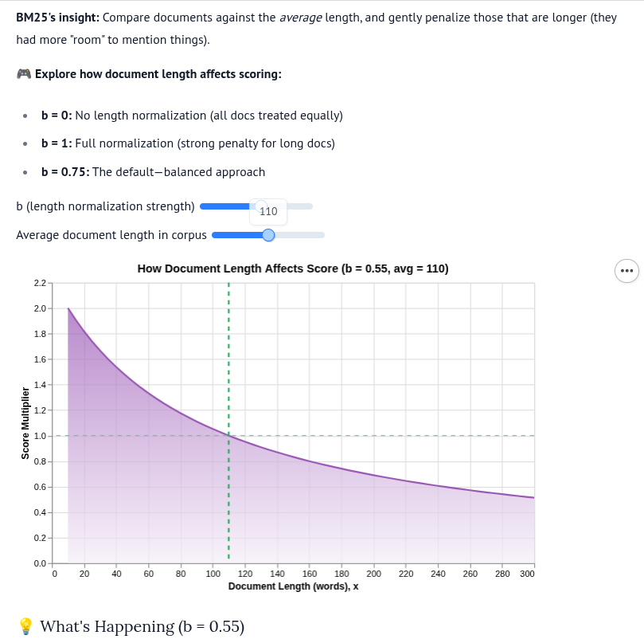

documents = [
"Python is a programming language",
"I love Python programming",
"Java is also a programming language",
]BM25 Explained for Hybrid Search and Rag | Part 1
blogging
embedding
qdrant
BM25 explained with python code implementation and math examples
BM25 Explained
Implementing BM25 Search Algorithm from Scratch
BM25 (Best Matching 25) is a ranking function used by search engines to estimate the relevance of documents to a given search query.
It’s an improvement over TF-IDF that handles term frequency saturation and document length normalization.
you will find a marimo version in the references that will help you understand the equation better.

1. Sample Documents
Let’s start with a small collection of documents to search through.
2. Tokenization
First, we need to break text into individual words (tokens). We’ll convert to lowercase for case-insensitive matching.
def tokenize(text):
"""Convert text to lowercase and split into words."""
return text.lower().split()
# Test tokenization
print("Example:", tokenize(documents[0]))Example: ['python', 'is', 'a', 'programming', 'language']3. Term Frequency (TF)
For each document, we count how many times each word appears.
We’ll use Python’s Counter for this.
from collections import Counter
def compute_term_frequencies(documents):
"""Compute term frequency for each document."""
doc_term_freqs = []
for doc in documents:
tokens = tokenize(doc)
term_freq = Counter(tokens)
doc_term_freqs.append(term_freq)
return doc_term_freqs
all_docs_terms = compute_term_frequencies(documents)
# Display term frequencies for each document
for i, tf in enumerate(all_docs_terms):
print(f"Document {i}: {dict(tf)}")Document 0: {'python': 1, 'is': 1, 'a': 1, 'programming': 1, 'language': 1}
Document 1: {'i': 1, 'love': 1, 'python': 1, 'programming': 1}
Document 2: {'java': 1, 'is': 1, 'also': 1, 'a': 1, 'programming': 1, 'language': 1}4. Document Frequency (DF)
Document frequency counts in how many documents each term appears. This helps identify common vs. rare words.
def compute_document_frequency(doc_term_freqs):
"""Count how many documents each term appears in."""
df = {}
for doc_tf in doc_term_freqs:
for term in doc_tf.keys():
df[term] = df.get(term, 0) + 1
return df
df = compute_document_frequency(all_docs_terms)
print("Document Frequencies:", df)Document Frequencies: {'python': 2, 'is': 2, 'a': 2, 'programming': 3, 'language': 2, 'i': 1, 'love': 1, 'java': 1, 'also': 1}5. Inverse Document Frequency (IDF)
IDF measures how rare or common a word is across all documents. Rare words get higher scores.
The formula is:
\[\text{IDF}(w) = \log\left(\frac{N - \text{DF}(w) + 0.5}{\text{DF}(w) + 0.5}\right)\]
where:
\(N\) = total number of documents
\(\text{DF}(w)\) = document frequency of word \(w\)
Why use Logarthim in IDF?
The logarithm compresses the scale of scores. Without it:
A word appearing in 1 out of 10,000 documents would dominate everything
Rare words would have scores thousands of times higher than slightly less rare words
The log smooths this out so differences are more reasonable.
The +0.5 terms are a smoothing trick to handle edge cases (like when a word appears in all or no documents).
import math
def compute_idf(term, df, num_docs):
"""Calculate IDF score for a term."""
if term not in df:
return 0
df_term = df[term]
return math.log((num_docs - df_term + 0.5) / (df_term + 0.5))
# Test IDF scores
print(f"IDF('python'): {compute_idf('python', df, len(documents)):.4f}")
print(f"IDF('java'): {compute_idf('java', df, len(documents)):.4f}")
print(f"IDF('programming'): {compute_idf('programming', df, len(documents)):.4f}")IDF('python'): -0.5108
IDF('java'): 0.5108
IDF('programming'): -1.9459Understanding Negative vs Positive IDF
| Word | Appears in | IDF | Meaning |
|---|---|---|---|
| “java” | 1/3 docs | +0.51 | Rare → discriminating → useful |
| “python” | 2/3 docs | -0.51 | Common → less useful |
| “programming” | 3/3 docs | -1.10 | Very common → penalized |
Key insight: Words that appear in more than half the documents get negative IDF scores.
They hurt relevance because they don’t help distinguish documents!
Why Do Some Scores Equal Zero?
When query terms have opposite IDF values, they can cancel out:
For query "love python" in Document 1:
“love” IDF = +0.51 (rare, appears in 1 doc)
“python” IDF = -0.51 (common, appears in 2 docs)
Total ≈ 0
This is a limitation of small document collections.
With thousands of documents, rare words would have much higher positive scores and wouldn’t be canceled out.
Why Does “Java” Score Better Than “Python”?
For query "java programming":
“java” has positive IDF (+0.51) because it’s rare
“programming” has negative IDF (-1.10) because it’s everywhere
For query "python programming":
“python” has negative IDF (-0.51)
“programming” has negative IDF (-1.10)
Both terms are negative → all documents score poorly!
Takeaway: BM25 rewards queries containing rare, discriminating terms.
6. Average Document Length
BM25 normalizes scores by document length to avoid bias toward longer documents.
def compute_avg_doc_length(doc_term_freqs):
"""Calculate average document length (in terms)."""
total_length = sum(len(doc_tf) for doc_tf in doc_term_freqs)
return total_length / len(doc_term_freqs)
avg_doc_len = compute_avg_doc_length(all_docs_terms)
print(f"Average document length: {avg_doc_len:.2f} unique terms")Average document length: 5.00 unique terms7. BM25 Score for a Single Term
The BM25 score for a single term in a document is:
\[\text{BM25}(w, d) = \text{IDF}(w) \cdot \frac{\text{TF}(w, d) \cdot (k_1 + 1)}{\text{TF}(w, d) + k_1 \cdot \left(1 - b + b \cdot \frac{|d|}{\text{avgdl}}\right)}\]
where:
\(\text{TF}(w, d)\) = term frequency of word \(w\) in document \(d\)
\(|d|\) = length of document \(d\)
\(\text{avgdl}\) = average document length
\(k_1\) = term frequency saturation parameter (typically 1.2-2.0)
\(b\) = length normalization parameter (typically 0.75)
The Role of Parameters \(k_1\) and \(b\)
| Parameter | Controls | Low Value | High Value |
|---|---|---|---|
| \(k_1\) (1.2-2.0) | Term frequency saturation | TF matters less | TF matters more |
| \(b\) (0-1) | Length normalization | Ignore length | Penalize long docs |
\(k_1 = 0\): Only IDF matters, TF is ignored
\(b = 0\): Document length is ignored
\(b = 1\): Full length normalization
def bm25_term_score(term, doc_tf, idf_score, doc_length, avg_doc_len, k1=1.5, b=0.75):
"""Calculate BM25 score for a single term in a document."""
tf = doc_tf.get(term, 0)
if tf == 0:
return 0
numerator = idf_score * tf * (k1 + 1)
denominator = tf + k1 * (1 - b + b * (doc_length / avg_doc_len))
return numerator / denominator8. Full BM25 Search
To score a query against all documents:
Tokenize the query
For each document, sum the BM25 scores of all query terms
Return scores for all documents
def bm25_search(query, documents, doc_term_freqs, df, avg_doc_len, k1=1.5, b=0.75):
"""
Score all documents for a given query using BM25.
Returns a list of (document_index, score) tuples sorted by relevance.
"""
query_tokens = tokenize(query)
num_docs = len(documents)
scores = []
for doc_idx, doc_tf in enumerate(doc_term_freqs):
doc_length = sum(doc_tf.values()) # Total terms in document
doc_score = 0
for term in query_tokens:
idf_score = compute_idf(term, df, num_docs)
doc_score += bm25_term_score(
term, doc_tf, idf_score, doc_length, avg_doc_len, k1, b
)
scores.append((doc_idx, doc_score))
# Sort by score (descending)
scores.sort(key=lambda x: x[1], reverse=True)
return scores9. Test the Search Engine
def display_results(query, results, documents):
"""Pretty print search results."""
print(f"\nQuery: '{query}'")
print("-" * 60)
for rank, (doc_idx, score) in enumerate(results, 1):
print(f"{rank}. [Score: {score:6.3f}] {documents[doc_idx]}")
# Test different queries
queries = ["python programming", "java programming", "love python"]
for query in queries:
results = bm25_search(query, documents, all_docs_terms, df, avg_doc_len)
display_results(query, results, documents)
Query: 'python programming'
------------------------------------------------------------
1. [Score: -1.785] Java is also a programming language
2. [Score: -2.457] Python is a programming language
3. [Score: -2.700] I love Python programming
Query: 'java programming'
------------------------------------------------------------
1. [Score: -1.317] Java is also a programming language
2. [Score: -1.946] Python is a programming language
3. [Score: -2.138] I love Python programming
Query: 'love python'
------------------------------------------------------------
1. [Score: 0.000] I love Python programming
2. [Score: 0.000] Java is also a programming language
3. [Score: -0.511] Python is a programming language10. Understanding the Results
- Negative scores can occur when query terms appear in most documents (high DF)
- Higher scores indicate better relevance
- With small document collections, common words dominate; BM25 works best with larger collections
- The parameters \(k_1\) and \(b\) can be tuned for different applications
The Three Ideas Behind BM25
- Term Frequency: Words appearing more often in a doc → more relevant
- BUT with diminishing returns (5 mentions isn’t 5x better than 1)
- Inverse Document Frequency: Rare words matter more
- “quantum” is more useful than “the”
- Document Length Normalization: Shorter docs are often more focused
- A 100-word doc mentioning “python” once may be more relevant than a 10,000-word doc mentioning it once
Here is Part 2: BM25 with Qdrant: A real use case for using BM25 with Gemini embeddings to improve search results for real estate.
Also the Marimo BM25 Explained
A benchmark: BM25 Benchmark